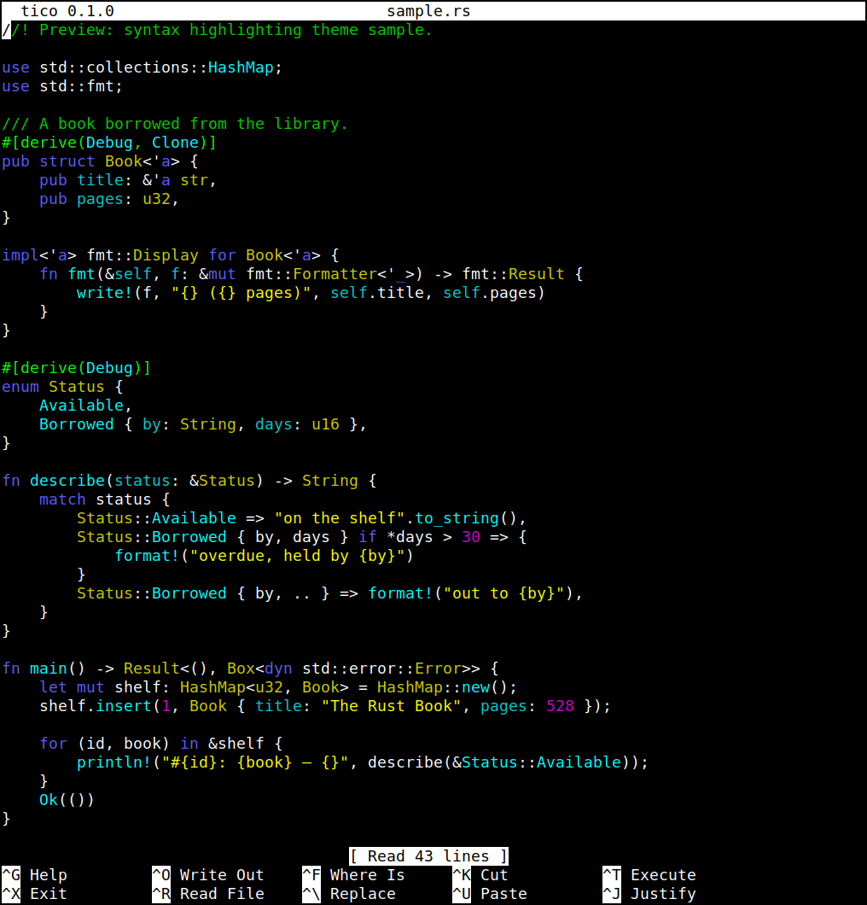
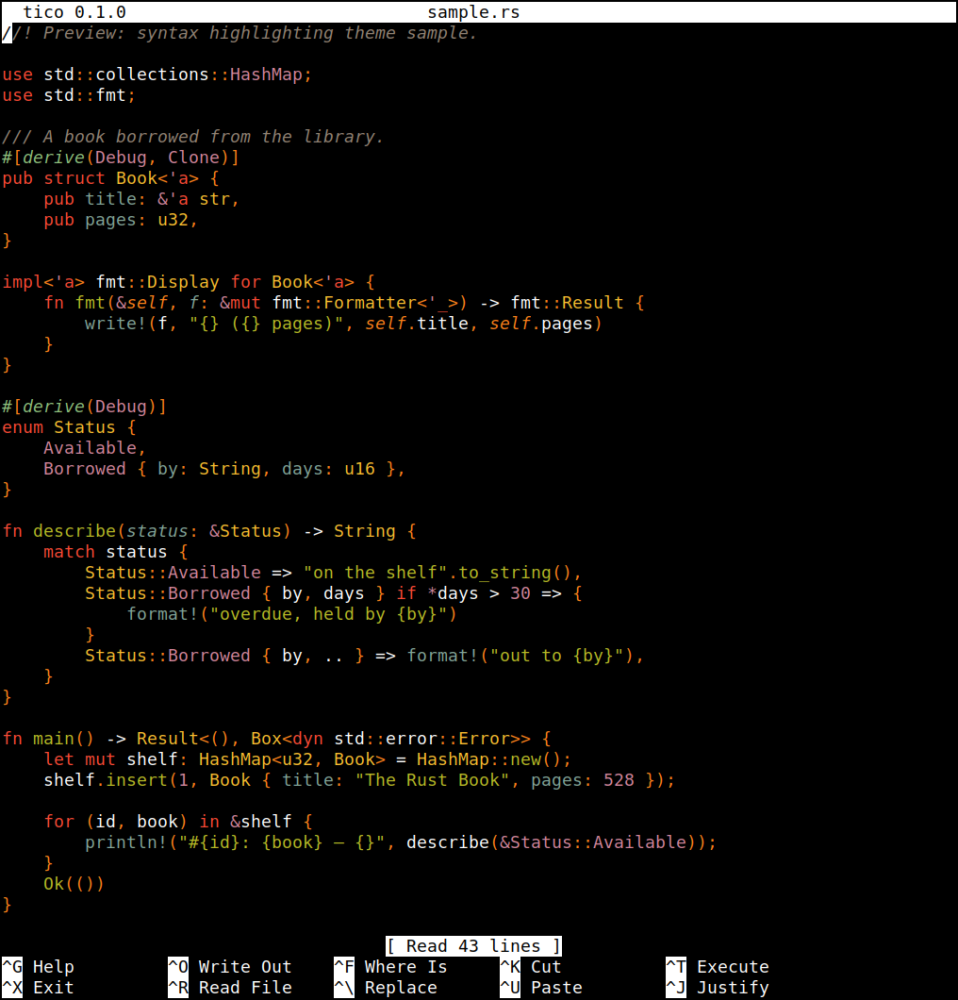
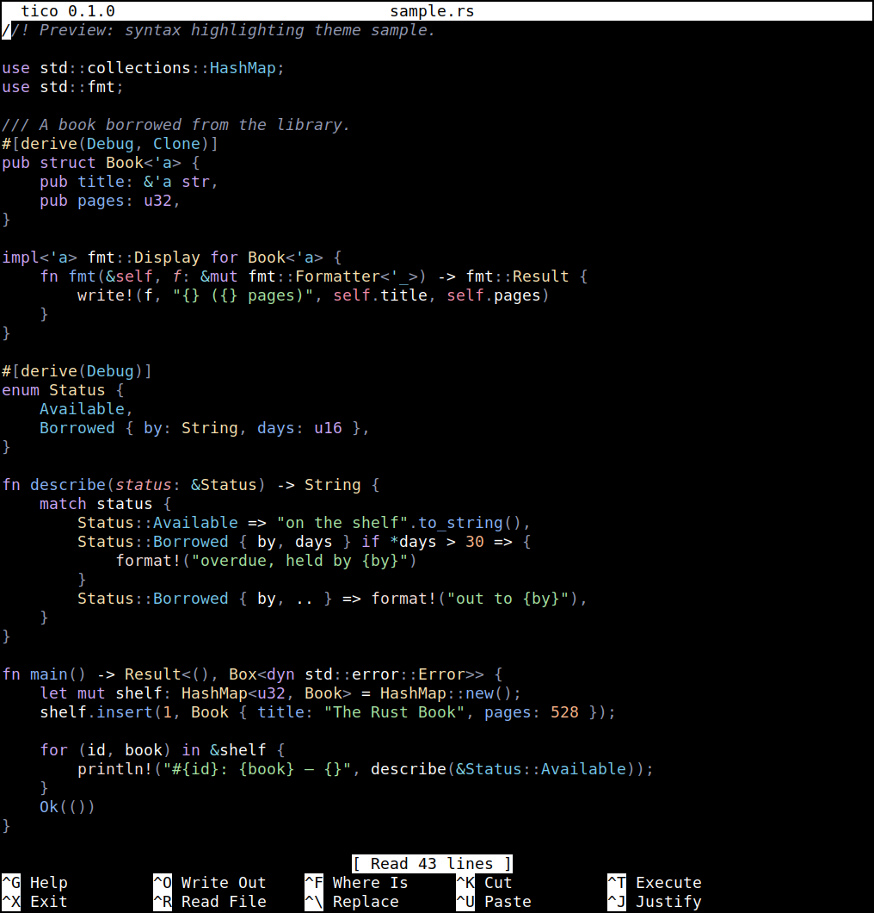
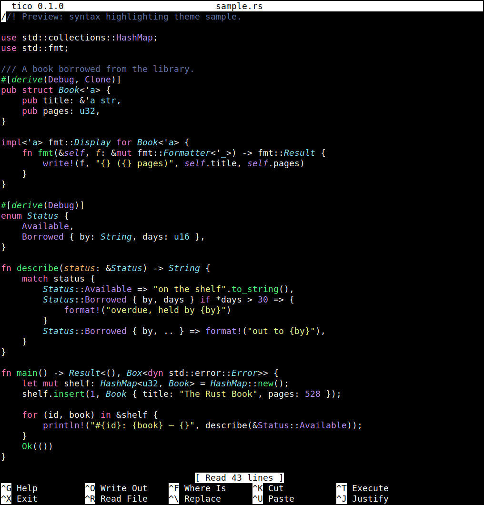
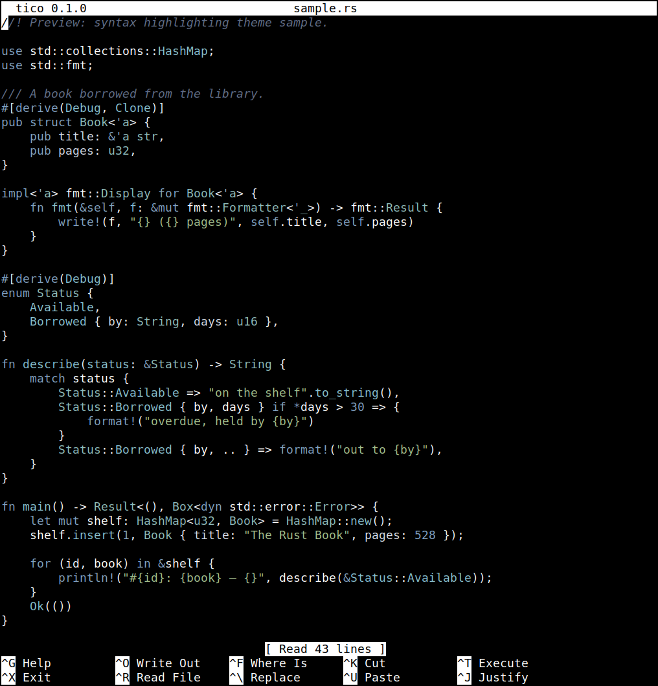
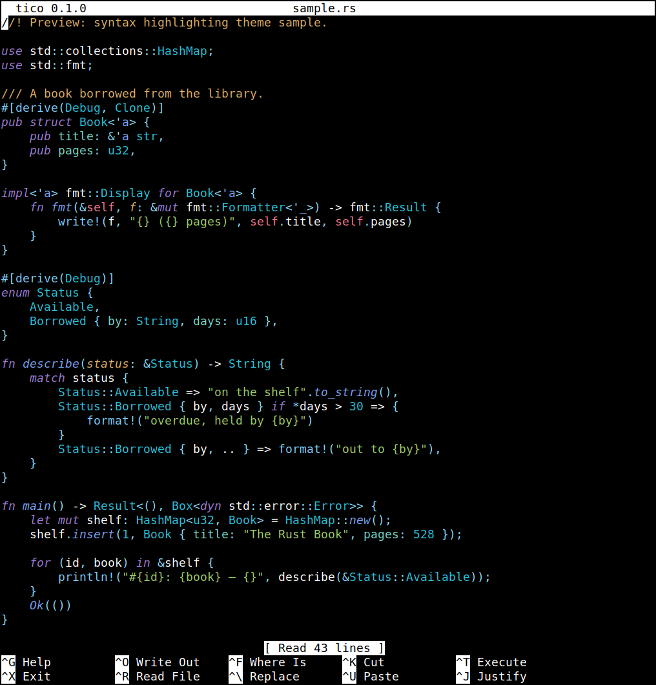
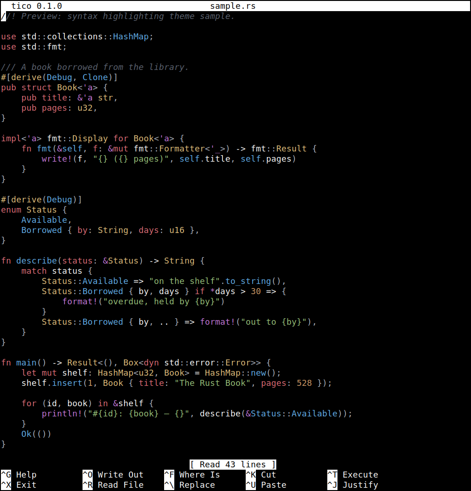
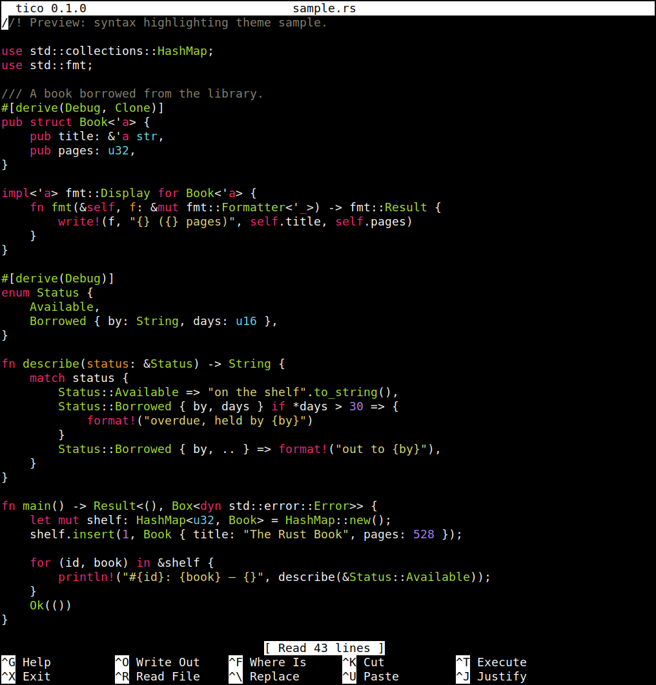
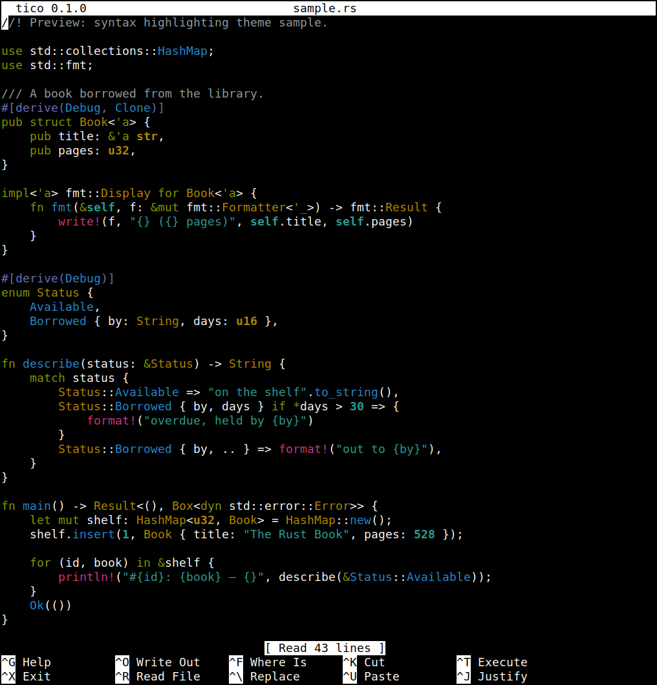

tico reads up to three configuration files, in this order, each one able to override settings from the ones before it:
nanorcnanorc~/.ticorc, tico's own config fileCommand-line flags are applied last and win over anything in any of these files.
tico understands the same file format as GNU nano's nanorc, so an
existing ~/.nanorc mostly works unchanged. The full list of what a
set/unset line can name is below, in "Configuration items" — you
shouldn't need nano's own nanorc(5) man page just to configure tico,
though it's a reasonable deeper reference if you already know it. It
looks for one system-wide file and one user file:
$(sysconfdir)/nanorc, normally /etc/nanorc, matching
nano's own --sysconfdir build option. A distro packaging tico can
point this elsewhere at build time, or disable system-wide lookup
entirely.$XDG_CONFIG_HOME/nano/nanorc,
~/.config/nano/nanorc, or ~/.nanorc that exists — the same search
order nano itself uses. Only the first one found is read; the others
are not merged in.Both files, if present, are read every time tico starts. set/unset
lines and bind/unbind lines are applied exactly as nano applies
them.
nanorc also has a syntax block format for defining syntax
highlighting (syntax, color, icolor, header, magic, include,
extendsyntax, and the per-syntax formatter/linter/comment/
tabgives lines). tico parses these — so a real-world nanorc full of
them still loads without errors — but they have no effect: tico
highlights with its own built-in, tree-sitter-based language table
instead of nano's regex engine. See "Syntax highlighting and themes"
below for how tico actually decides what to highlight and with which
colors.
Two command-line flags change how nanorc is handled:
-f FILE / --rcfile FILE reads only that one file in place of the
system/user nanorc search (~/.ticorc is still read afterward,
unless also suppressed).-I / --ignorercfiles skips all of it — no nanorc, no ~/.ticorc.This is every name a set/unset line (in a nanorc) or a bare line
(in ~/.ticorc's [main], see below) can use, grouped by what they
affect. Most take no value — they're plain on/off toggles. A few take
one, written set name value in a nanorc or name = value in
~/.ticorc.
A handful are recognized and stored but don't do anything in tico yet (no feature has been built for them). Those are marked (not yet implemented) below — flipping one won't error, it just won't change tico's behavior. Everything not marked that way works.
afterends — with word-selection movement, stop at the end of a
word instead of its start. (not yet implemented)atblanks — when softwrap is on, prefer to break lines at
whitespace rather than mid-word. (not yet implemented)autoindent — indent a newly created line to match the previous
line's leading whitespace.breaklonglines — automatically hard-wrap the current line once it
grows past the fill column, as you type. (not yet implemented)colonparsing — accept a filename:line[,column] suffix on files
named on the command line, to open straight to that spot. (not yet
implemented)cutfromcursor — cut-line (^K) cuts from the cursor to the end of
the line, instead of the whole line.fill N — the target line width for hard-wrap and justify (^J).
N positive is an absolute column; zero or negative counts back from
the right edge of the screen (the default, -8, wraps 8 columns in
from the edge).magic — when a file's language can't be told from its name, peek at
its content (via libmagic) to guess one. (not yet implemented —
tico's own filename/shebang/modeline/content-peek detection always
runs regardless of this setting; see "Syntax highlighting and
themes" below.)nonewlines — don't keep an empty line below the text. Normally
the buffer always ends with an empty line (the cursor can move down
onto it, and typing there adds a fresh one below), so a saved file
always ends with a newline, even one that was read without one. With
this set, the text ends wherever it ends, and a file without a final
newline is saved that way.nowrap — legacy alias for unset breaklonglines. (not yet
implemented — has no effect at all currently, including on
breaklonglines)rebinddelete — treat the Delete key as Delete even on terminals
that report it as Backspace. (not yet implemented)smarthome — pressing Home moves to the first non-blank character
first, then to column 1 on a second press.softwrap — display an overlong line across multiple screen rows
instead of scrolling it horizontally. (not yet implemented)tabstospaces — convert a typed Tab into the equivalent number of
spaces.trimblanks — trim trailing spaces from a line before hard-wrapping
it during justify.wordbounds — a more Unix-like definition of a word boundary
(punctuation counts as its own word) for word-wise cursor movement.
(not yet implemented)wordchars STRING — extra characters (beyond letters and digits)
that count as part of a word. Honored by word completion (^]): with
set wordchars "_", typing foo and pressing ^] can complete to
foo_bar. Word-wise movement doesn't consult it yet. (partly
implemented)zap — let Backspace/Delete erase a marked selection in one go,
instead of requiring Cut first. (not yet implemented)casesensitive — make searches and replacements case-sensitive by
default (still toggleable per-search with M-C).historylog — save search/replace/execute history to disk between
sessions, and reload it on startup. Off in restricted mode.regexp — treat search/replace patterns as regular expressions by
default (still toggleable per-search with M-R).boldtext — use bold text instead of reverse video for the title
bar, status bar and prompts, the shortcut keys in the help lines, line
numbers, the selection, and the </> markers on a horizontally
scrolled line. Anything given its own color with a set …color line
keeps that color. --boldtext (-D) on the command line.bookstyle — when justifying, treat any line that starts with
whitespace as beginning a new paragraph. (not yet implemented)constantshow — after every keystroke, show the cursor's position
in the status bar, the same report ^C gives: line, column and
character, each out of the total and as a percentage. A message
stays up for the keystroke that caused it, then gives way to the
position again. With minibar, the minibar shows line,column and
the code of the character under the cursor instead. Has no effect
under zero. --constantshow (-c) on the command line; M-C
toggles it (and, under zero, turns zero off).emptyline — leave the line below the title bar blank instead of
using it for text. (not yet implemented)guidestripe N — draw a vertical guide bar in column N.indicator — show a position+portion scrollbar-style indicator
(colored by scrollercolor). (not yet implemented)jumpyscrolling — scroll the view a half-screen at a time instead of
line by line. (not yet implemented)linenumbers — show line numbers to the left of the text (colored by
numbercolor).matchbrackets STRING — the brackets M-] (go to the matching
bracket) recognizes: all the opening brackets first, then their
closing partners in the same order. The default is "(<[{)>]}". The
value must not contain blanks and must have an even number of
characters.minibar — use a single-line, minimal status bar instead of the
full title/status bars.mouse — enable mouse support (clicking to place the cursor,
scrolling, and so on).nohelp — don't show the two-line key-reference bar at the bottom.quickblank — clear a status-bar message on the very next keystroke,
instead of leaving it up for a second or two.rawsequences — work around numeric-keypad key-code confusion on
some terminals. (not yet implemented)showcursor — show the terminal cursor in the file browser (on the
selected name) and in help text, where tico would otherwise hide it.
In help text the arrow keys then move the cursor through the text,
scrolling only when it reaches the edge, instead of scrolling the
view line by line.stateflags — show file-state indicators (modified, DOS/Mac format,
etc.) on the title bar. (not yet implemented)syntax_highlighting — tico-only, not a nano option: turn tico's own
syntax highlighting on or off globally (on by default; also
toggleable at runtime with M-Y). See "Syntax highlighting and
themes" below.tabsize N — how many columns a tab character occupies (default
8).whitespace "TS" — the two single-column characters
whitespacedisplay shows in place of a tab and a space,
respectively (default » and ·).whitespacedisplay — show tabs and spaces using the whitespace
characters, in the editor and at prompts (M-P).zero — hide every bar (title, status, help) and use the whole
terminal for text.allow_insecure_backup — when an old backup file is in the way and
can't be deleted, overwrite it in place instead of giving up on that
backup. Normally tico deletes any old backup and creates a brand-new
file, so it never writes through a symlink or other file someone left
at the backup's name.backup — before overwriting an existing file, save its previous
contents as NAME~ next to it (replacing any older NAME~). The
backup keeps the original's permissions, timestamps and, where
allowed, owner. If the backup can't be written there, tico tries
your home directory instead; if that fails too, it asks whether to
save without a backup. -B on the command line; M-B at the Write
Out prompt turns it on or off.backupdir DIR — with backup on, keep backups in DIR instead of
next to each file. Each one is named after the file's full path with
every / turned into !, and numbered so earlier ones are never
replaced (!home!me!notes.txt~, then ~.1, ~.2, …). DIR must be
an existing directory, or tico refuses to start. -C DIR on the
command line. Setting this alone doesn't turn backups on.brackets STRING — closing-bracket-like characters, considered
alongside punct when justify decides where a sentence ends.locking — create a vim-style .swp lock file while a buffer is
open, and honor other editors' lock files.multibuffer — open each file named on the command line (or read
with ^R) into its own buffer instead of replacing the current one.noconvert — don't convert a DOS/Mac-format file's line endings on
read, or convert back on write; keep the bytes as-is.operatingdir DIR — confine tico to DIR and what's below it. tico
starts in DIR (so relative names, including those on the command
line, are taken from there) and refuses to read a file from outside
it ("Can't read file from outside of DIR") or write one there ("Can't
write outside of DIR"). The file browser and Tab completion stay
inside too, and ^R says [from DIR]. A DIR that isn't an
existing directory stops tico from starting. -o DIR /
--operatingdir DIR on the command line; in restricted mode, only
the command-line one counts.positionlog — remember where the cursor was when you closed each
file, and put it back there the next time you open that file (from
the command line, or with ^R into a new buffer). A +LINE on the
command line takes precedence. The last 200 files are kept in
filepos_history in nano's state directory (~/.nano/ if that
exists, else $XDG_DATA_HOME/nano/ or ~/.local/share/nano/), in
nano's own format, so tico and nano share it. Off in restricted mode.
-P / --positionlog on the command line.preserve — let the terminal's XON/XOFF flow control (^Q/^S)
through instead of tico intercepting them. (not yet implemented)punct STRING — characters that count as sentence-ending
punctuation for justify (default !.?), consulted together with
brackets.quotestr REGEX — the regular expression that identifies a quoted
line's prefix (e.g. >) when justifying quoted text.restricted — not a nanorc setting (as in nano): restricted mode is
turned on with -R / --restricted, or by running tico under a name
that starts with r (like nano's rnano). tico then touches only
the files named on the command line. Read File (^R), Execute
(^T), suspending, the spell checker, linter and formatter all say
"This function is disabled in restricted mode". At the Write Out
prompt a named buffer's name can't be changed, an unnamed one can't
overwrite an existing file, a selection isn't written on its own,
and Append, Prepend, Backup File and Browse are gone. Tab completion
is off, backup, historylog and positionlog are off, a nanorc
operatingdir is ignored, and the title bar says "Restricted" until
the buffer is modified.saveonexit — save changes on exit without asking.speller PROGRAM — use PROGRAM as the spell checker (^T) instead
of the built-in one.unix — save a new file in Unix format by default, regardless of
what format it was read in.Twelve options each set the color of one piece of the interface. All
share the same value syntax: [bold,][italic,]fgcolor[,bgcolor] — one
or two color names (or hex, #rgb), optionally preceded by bold
and/or italic. Color names are the eight ANSI names (black, red,
green, yellow, blue, magenta, cyan, white), each optionally
prefixed light for the bright variant, plus normal for the
terminal's default, and — on a terminal with at least 256 colors — a
set of named hues (pink, purple, mauve, lagoon, mint, lime,
peach, orange, latte, rosy, beet, plum, sea, sky,
slate, teal, sage, brown, ocher, sand, tawny, brick,
crimson). Example: set titlecolor bold,white,blue.
errorcolor — error messages in the status area. Defaults to bold
white on red.functioncolor — a key's description in the help/key-reference bars
(the part next to the key itself). Unstyled (plain) by default.keycolor — a key combo's name in the help/key-reference bars.
Reverse video by default.minicolor — the single-line bar used by minibar. Falls back to
titlecolor's colors (like promptcolor) when unset.numbercolor — line numbers (linenumbers). Reverse video by
default.promptcolor — the prompt bar shown while typing a search, filename,
etc. Falls back to titlecolor's colors when unset.scrollercolor — the position+portion indicator (indicator). Its
track is unstyled by default; the thumb is always additionally
reverse-video.selectedcolor — selected (marked) text, and the selected name in
the file browser. Reverse video by default.spotlightcolor — the current search match. Defaults to black on
light yellow.statuscolor — ordinary (non-error) status-bar messages.stripecolor — the vertical guide bar (guidestripe). Reverse video
by default.titlecolor — the title bar. Reverse video by default; every other
bar's default styling is ultimately derived from this one.~/.ticorc: tico's own config filetico adds one more file with no nano equivalent: ~/.ticorc (or
$XDG_CONFIG_HOME/tico/ticorc, if that already exists). Its settings
take precedence over anything set in a nanorc. It's an INI-style file
with up to four sections.
[main]The same options as "Configuration items" above, just written without
the leading set/unset keyword — a bare optionname (or
optionname = value) turns it on, and unset optionname turns it off:
[main] linenumbers tabstospaces tabsize = 4 unset mouse
[keybindings]Rebinds keys without nano's bind/unbind syntax. Each line is
[menu.]key = function; menu defaults to main if omitted. A
quoted value binds the key to that literal string (a macro) instead of
a named function. key = unbind (or = none) removes a binding.
[keybindings] ^G = help search.^Y = older ^D = "some literal text" ^K = unbind
[syntax]Picks which color theme tico's syntax highlighter uses — nothing to do
with nanorc's color/icolor directives, which tico ignores (see
"Syntax highlighting and themes" below). theme = NAME sets the
theme for every language; LANGUAGE.theme = NAME overrides it for one
language only (language names as listed by --listsyntaxes):
[syntax] theme = tico-builtin-gruvbox perl.theme = tico-builtin-nord fortran.theme = "~/my-themes/retro.toml"
[tico]Settings with no nano equivalent at all. Currently just one:
max_syntax_highlight_size — files larger than this are opened
without syntax highlighting (to keep large files fast). Accepts a
plain byte count or a KB/MB/GB-suffixed size, e.g.
max_syntax_highlight_size = 8MB.[tico] max_syntax_highlight_size = 8MB
This is the one area where tico deliberately does not behave like
nano. nano highlights by matching regular expressions defined in
nanorc syntax/color/icolor blocks. tico instead ships its own
built-in table of languages, each backed by a tree-sitter grammar, and
detects a buffer's language from its filename, shebang, or a modeline
— not from anything in a nanorc. There is currently no way to add
highlighting for a language tico doesn't already know, short of adding
a grammar to tico itself.
Colors, however, are configurable: they come from a theme file in
Helix's theme format — plain TOML, keyed
by scope names like keyword.control.import or constant.numeric.
Only a theme's syntax-scope entries are used; a theme's ui.* entries
(for things like the status bar or selection color) are ignored, since
those follow nano's own set titlecolor and similar options instead.
tico has nine themes built in, all named with a tico-builtin- prefix
(reserved: a name starting with it is never looked for on disk, so it
can't be shadowed by a same-named file elsewhere):
tico-builtin-default — tico's own 16-color theme, with no
backgrounds, taking its colors from the terminal's palette. The
right choice on a terminal that doesn't support truecolor.tico-builtin-gruvbox — warm, retro, earthy dark.tico-builtin-catppuccin_mocha — soft pastel dark.tico-builtin-dracula — purple/pink, high-saturation dark.tico-builtin-nord — cool, muted "arctic" blue dark.tico-builtin-tokyonight — deep night-blue with violet accents.tico-builtin-onedark — the classic Atom "One Dark".tico-builtin-monokai — high-contrast green/yellow/pink (Sublime's
classic).tico-builtin-solarized_light — the one light-background theme.All eight non-default themes are vendored unmodified from Helix and use
truecolor (#rrggbb), so they need a terminal that supports it.
Each built-in theme, highlighting the same sample of Rust code, with
tico's default title bar and two-line help footer. Note
tico-builtin-solarized_light's colors are calibrated for a light
background, but tico takes the background itself from the terminal —
that's the ui.*-is-ignored rule above in practice.
tico-builtin-default

tico-builtin-gruvbox

tico-builtin-catppuccin_mocha

tico-builtin-dracula

tico-builtin-nord

tico-builtin-tokyonight

tico-builtin-onedark

tico-builtin-monokai

tico-builtin-solarized_light

Any other name is looked up on disk, in order:
$XDG_CONFIG_HOME/tico/themes/ (normally ~/.config/tico/themes/)$XDG_CONFIG_HOME/helix/themes/ (or HELIX_RUNTIME/themes, if set)/usr/share/helix/runtime/themes and similar system paths)so any theme already installed for Helix works for tico too, unmodified.
The theme is chosen with [syntax]'s theme/LANGUAGE.theme in
~/.ticorc (above), or overridden from the command line with
--tico-theme NAME (global) or --tico-theme LANGUAGE.NAME (one
language only) — either flag can be repeated. --tico-list-themes
prints every built-in and on-disk theme it can find, along with a
summary of which theme applies to what in the current configuration.
Later wins over earlier:
~/.nanorc or equivalent — -f/--rcfile replaces
both of the above with a single named file)~/.ticorc-I/--ignorercfiles skips 1–3 entirely and runs on defaults plus
whatever's on the command line.